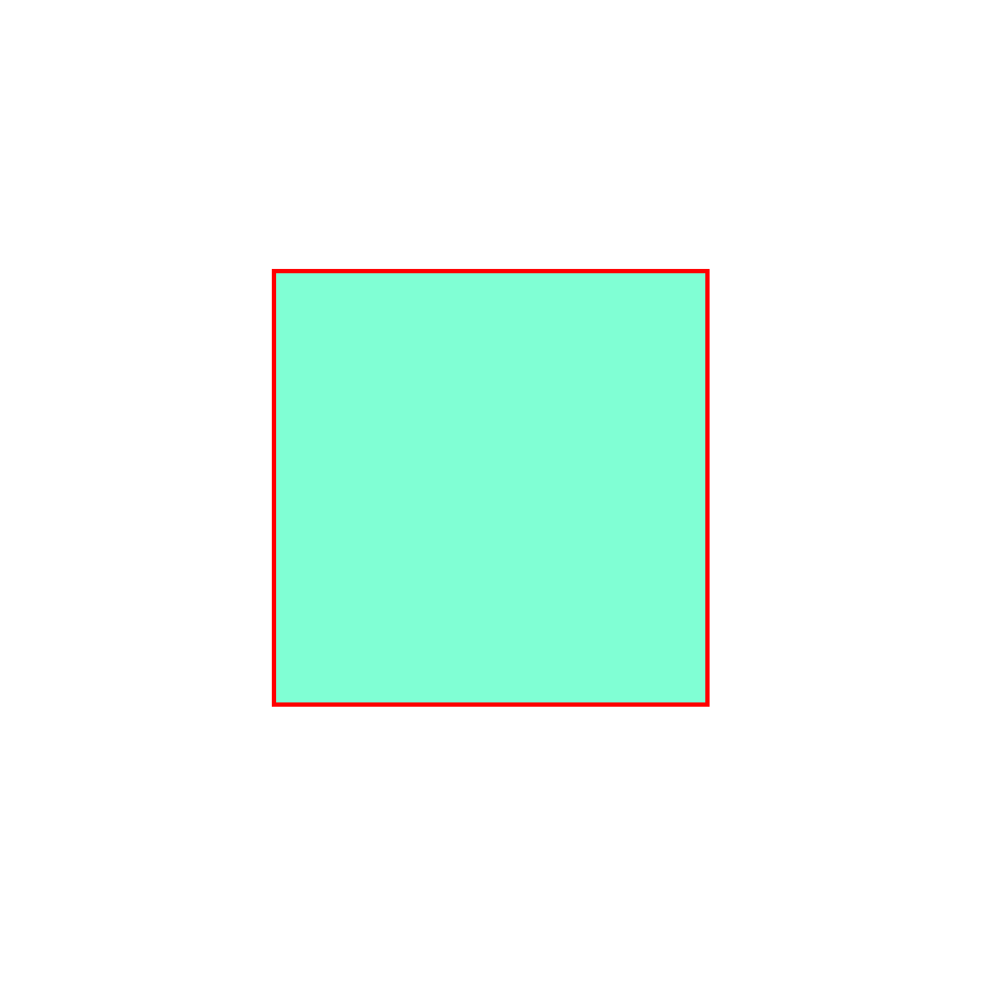
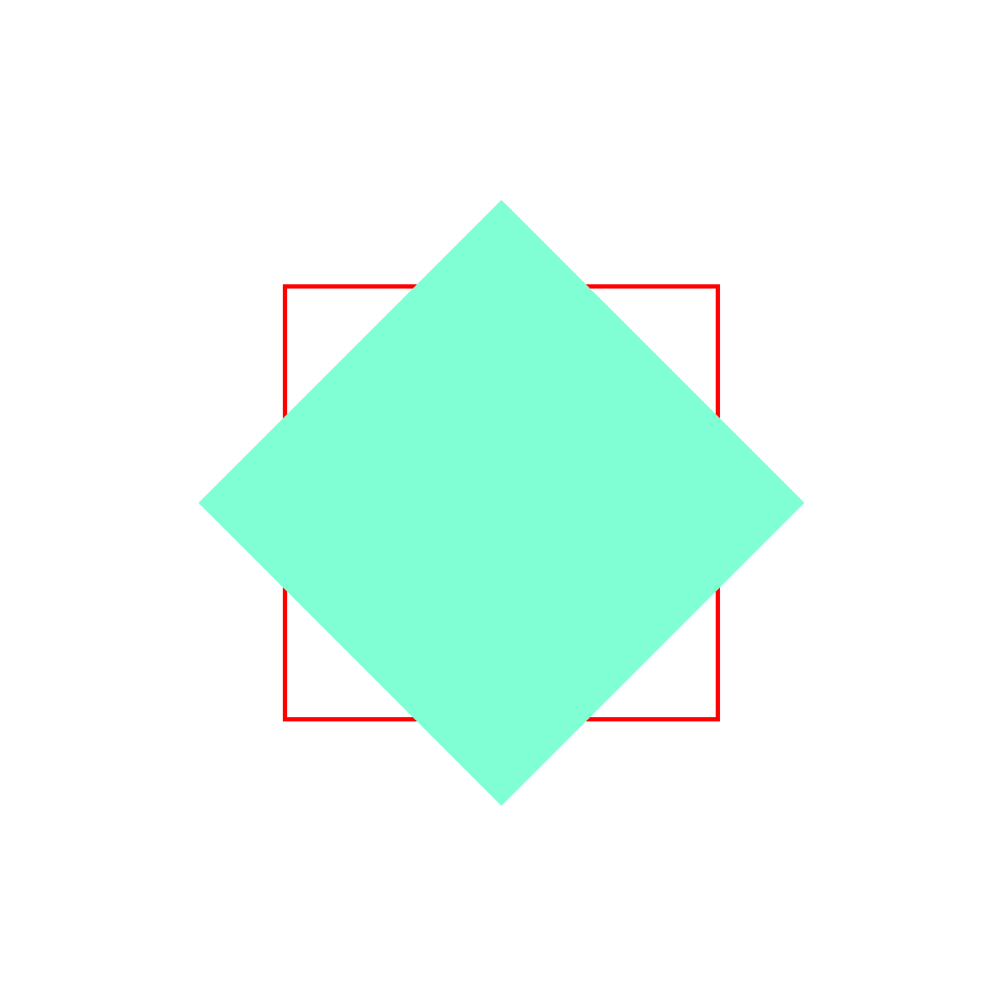
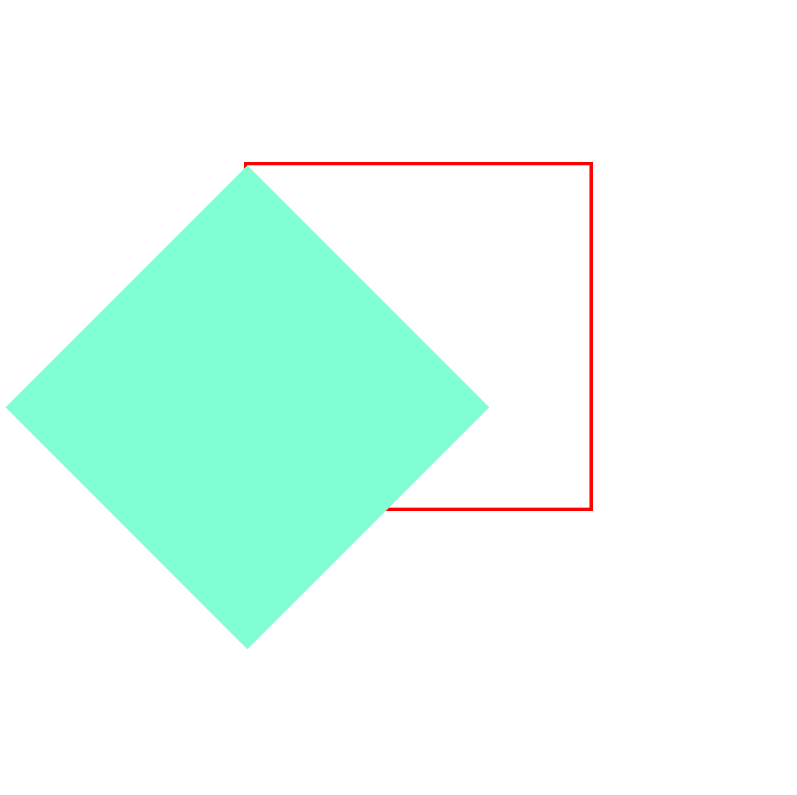
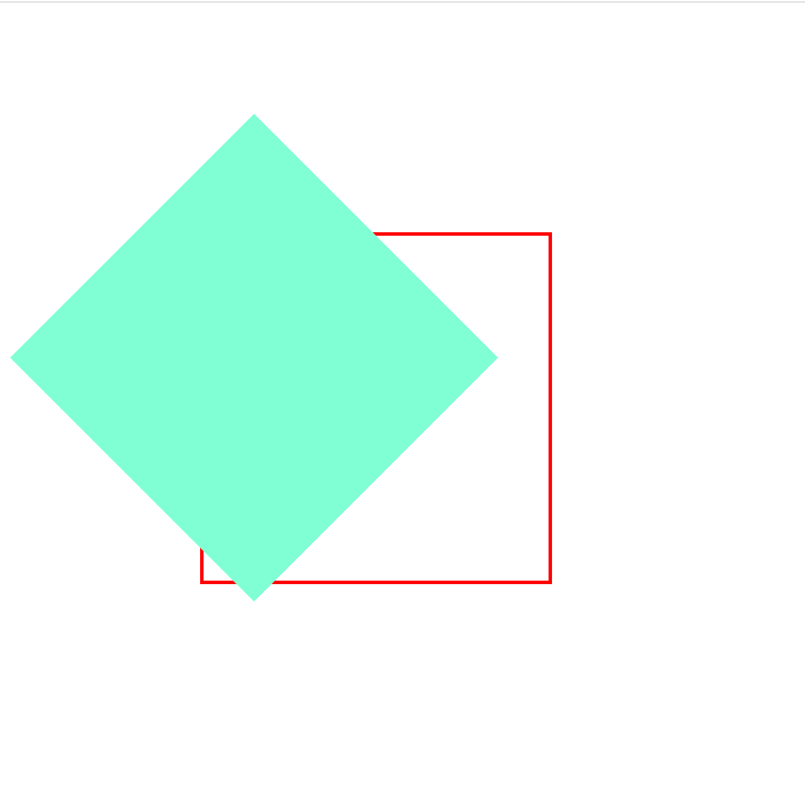
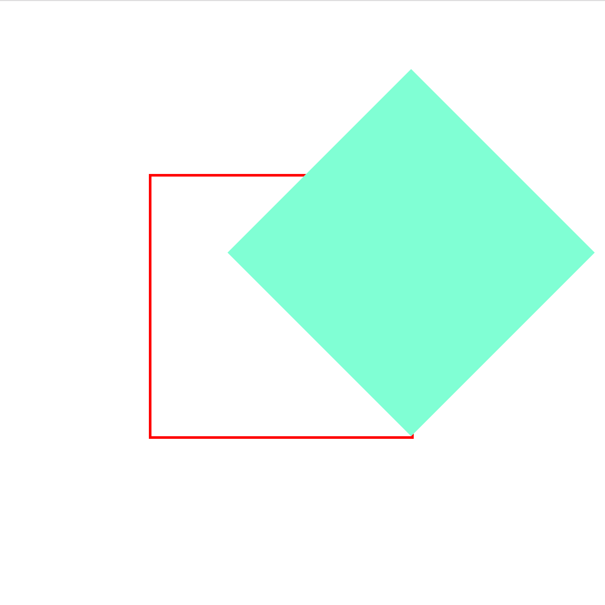

2d形态下transform-origin
transform-origin 属性用来设置 transform 变换的基点位置。默认情况下，基点位置为元素的中心点。
0.原状态

1.默认基点位置为元素的中心点
transform: rotate(45deg);

2.像素值改变基点位置
transform: rotate(45deg);
transform-origin: 0 0;

3.用位置描述来改变基点位置
transform: rotate(45deg);
transform-origin: top center;

4.百分比改变基点位置
transform: rotate(45deg);
transform-origin: 100% 100%;
